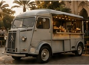
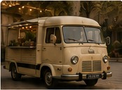
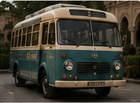
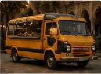
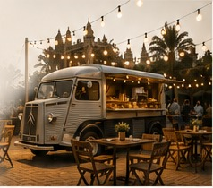

Trouvez le food truck idéal pour votre événement
Nos food trucks vintage
Voir tous les véhicules
Citroën Type HY 1960 Iconique et spacieux, parfait pour toutes vos créations culinaires. Peugeot D4B
1965
Charme rétro et grand comptoir de service.
Peugeot D4B
1965
Charme rétro et grand comptoir de service.

Renault Estafette 1972 Compacte et agile, idéale pour vos événements urbains.
Volvo B655 1963 Volume généreux et style unique pour une expérience différenciante.
Ford Transit 1974 Robuste et fonctionnel, parfait pour les grands événements.Inspirations
Pourquoi choisir ENCORE ?
Un food truck vintage,
pour une expérience
qui a du goût et du style.
